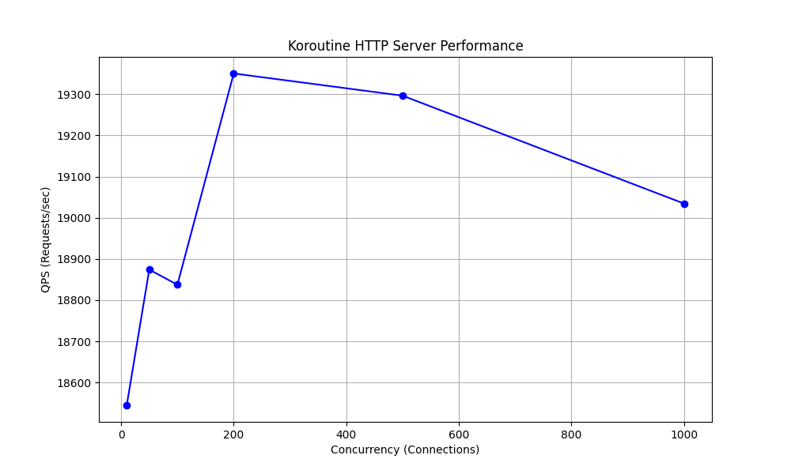

欢迎来到 Koroutine Library


专为 C++23 设计的现代化、高性能协程库
koroutine_lib 是一个基于 C++23 的现代化协程库，专为结构化并发和高性能异步 I/O 设计。它旨在简化异步编程，让你用同步的代码风格编写高效的异步程序。
核心特性
- 🚀 高性能: 基于
io_uring(Linux) 和原生异步 API，提供极致的 I/O 性能。 - 🧵 结构化并发: 提供
Task,Generator,Channel等原语，轻松管理协程生命周期。 - 🌐 异步 HTTP: 内置基于
cpp-httplib的全异步 HTTP 客户端与服务端。 - 🧩 易于集成: 提供单文件头文件 (
single_header) 和预编译库，开箱即用。
📊 性能表现
koroutine_lib 在设计上追求低开销与高吞吐。在标准的 macOS 开发机 (Apple M4, 16GB) 上，单核心 HTTP 服务可轻松处理 19k+ QPS，且在低并发下保持亚毫秒级延迟。

🆚 性能对比 (参考)
| 软件/框架 | 典型 QPS (单核) | 说明 |
|---|---|---|
| Koroutine | ~19k | C++23 协程 (当前) |
| Nginx | ~22k | 本机实测 (M4) |
| Redis | ~100k+ | 极致优化的 C 单线程 |
| Node.js | ~12k | V8 事件驱动 |
🔮 未来规划
- HTTP 栈原生异步化: 优化
cpp-httplib的非异步逻辑，减少拷贝与阻塞。 - 多线程 Reactor: 充分利用多核性能。
- io_uring: Linux 下的极致 I/O 性能。
快速链接

致谢
koroutine_lib 的 HTTP 模块深度集成了 cpp-httplib 项目。我们对其进行了协程化改造，使其能够无缝运行在 koroutine_lib 的异步 I/O 框架之上。感谢原作者 yhirose 提供的优秀基础。